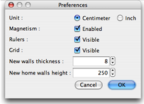

To edit Sweet Home 3D preferences, choose Sweet Home 3D > Preferences... on Mac OS X or File > Preferences... on
other systems.

In preferences pane, you can choose the Unit used to draw home plan rulers and grid, and to display lengths.
The Magnetism check
box enables or disables the magnetism used in home plan during walls drawing and furniture
placing.
The Rulers check box allows to make plan rulers visible or invisible.
The Grid check box allows to make plan grid visible or invisible.
The New walls thickness value sets the thickness of all the walls that will be created once preferences pane
will be closed.
The New home walls height value
sets the height of all the walls of new homes created once preferences pane will
be closed.
|